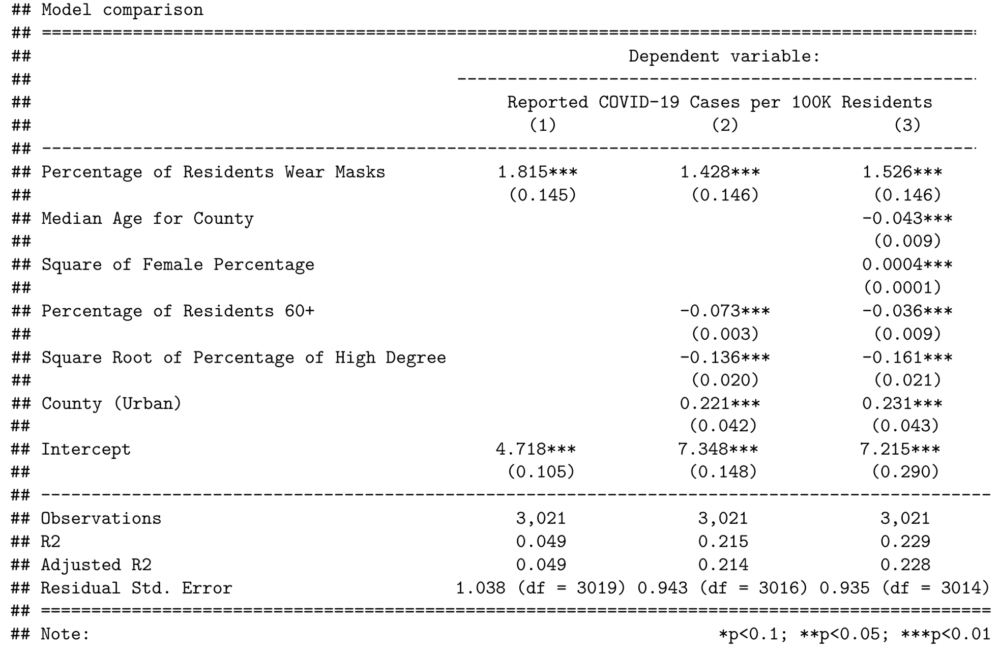

REGRESSION ANALYSIS: MASK-USE AND COVID-19 CASES
This is a group project I worked on for the Master of Information and Data Science (MIDS) - Statistics for Data Science course at UC Berkeley.
Teammates: Tiantian Zhao, Yuqiao Chen.
Links: [Slide Deck], [Final Report], [Git Repo]
Skills Demonstrated
- Formulating precise research questions and designing studies to address them.
- Collecting data from diverse sources to support study objectives.
- Theorizing causal pathways, including covariate considerations.
- Proficiency in statistical analysis and regression modeling using R.
- Critically assessing validity of model assumptions and identifying model limitations.
Technologies: R
Overwiew
In this project, we conducted an investigation into the relationship between COVID-19 cases and mask usage behavior across various counties in the United States. Our primary objective was to utilize regression models to explore this relationship. We constructed a theoretical causal pathway and carefully selected relevant covariates. Data collection involved aggregating information from diverse sources to ensure the availability of necessary variables. We constructed and evaluated multiple regression models, with a focus on interpretation of the generated coefficients. A critical aspect of our analysis involved assessing the validity of model assumptions and identifying potential limitations in our models.
Approach
- Formulating the Research Question: In light of the far-reaching impact of the COVID-19 pandemic, there is a pressing need for comprehensive insights to enhance future preparedness. Notably, the utilization of masks played a pivotal role in curbing virus transmission, but its effectiveness was significantly shaped by political dynamics in the United States. To gain a deeper understanding of this relationship, we investigate the following research question:
“How does public mask usage influence the incidence of Covid-19 cases within their respective communities?” - Causal map and Covariates: Our analysis is guided by a causal model. We theorized that mask use affects Covid-19 transmission directly, while urban counties may experience increased transmission due to higher population densities. Urban counties may also have differences in mask use behavior due to political leanings. Education could drive mask usage because of better virus transmission understanding. The percentage of seniors might impact case counts due to increased sysmptomatic cases and testing, and the percentage of females might influence cases through systematic lifestyle differences.
- Data sources and EDA: We gathered necessary covariate data from diverse sources, including the New York Times Survey, National Institute of Health, Department of Agriculture, Kaiser Health News, and American Community Survey, which we aggregated for our regression analysis. Below, you can see a county-wise distribution of Covid-19 cases.
- Regression Output Analysis: We employed R to construct progressively complex regression models to assess the impact of various covariates on the outcome variable. The analysis revealed intriguing findings, including a positive coefficient for mask use, indicating that counties with higher mask usage had more Covid-19 cases. Urban counties exhibited a 20% higher Covid-19 rate compared to rural areas. Moreover, there was a negative coefficient for education level. Finally, we saw a notably large intercept term, suggesting that the variables considered may not be dominant causal factors.
- Limitations: The study acknowledged several limitations, including potential reverse causality between mask usage and COVID cases; non-standardized data collection processes during the early pandemic, resulting in potential inaccuracies and missing cases; political influences on county responses and mask usage; and the limited analysis scope, which focused solely on one date for COVID case counts.Furthermore, we conducted a critical analysis on the validity of the assumptions of the models, assessing independence of the data point, collinearity between variables, and heteroskedasticity of model residuals.
